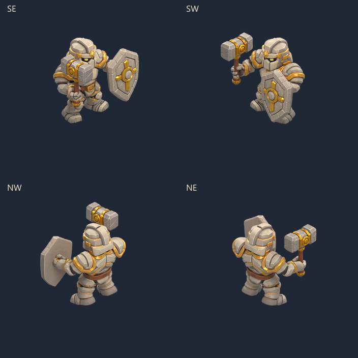

Paladin · genoux, bras, torse au sol
La chute reprend la séquence validée pour le Vulpin. Les genoux cèdent d'abord, les bras s'allongent pour amortir et le torse se pose au sol. La tête se tourne ; le marteau et le bouclier tombent à côté.

10 poses · 750 ms · quatre directions. La boucle ajoute une pause de revue ; la scène maintient le corps au sol.
Godot : PaladinDeath.tscn puis F6. Pause, image suivante et vitesse ×2 disponibles.
Toutes les poses · Reproduction et contrôles · Ancienne chute latérale, remplacée